Link Corretor · Guia para a construtora
Passo a passo do material que precisamos, o que fazemos com cada item e como fica o resultado. Quanto mais completo o envio, mais fiel a apresentação.
O resultado
Um link, enviado pelo corretor, que abre no celular e no computador.
Prédio ou casas no lugar exato, com o bairro, o relevo e o sol na hora certa. À noite, as janelas acendem.
Toque numa unidade e abre a ficha: área, andar, vagas, planta, valor e fluxo de pagamento. Cores mostram o que está disponível.
Galeria, planta com pontos, antes/depois e dados da região, tudo dentro da mesma apresentação.
O cliente pergunta e a IA responde com os fatos do empreendimento. Quem abre pelo link do corretor fica no nome dele.
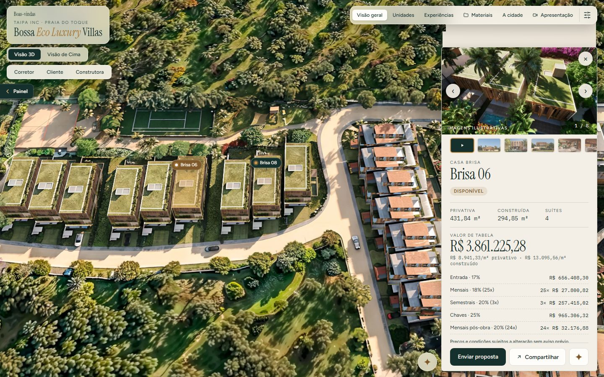
Ficha da unidade: fotos, área, valor de tabela, R$/m² e fluxo. Bossa Eco Luxury Villas.
Checklist
Os três primeiros definem a qualidade do 3D. Os outros completam a apresentação e podem chegar depois.
| # | Item | Formato | Para quê | Prioridade |
|---|---|---|---|---|
| 1 | Modelo 3D do projeto | .skp (SketchUp), .glb, .fbx ou .ifc | O prédio de verdade na apresentação | Essencial |
| 2 | Matrícula do terreno (coordenadas) ou alfinete no Google Maps | PDF ou link | Posição exata no mapa; recorte do terreno | Essencial |
| 3 | Plantas de venda, uma por tipo | PDF ou JPG/PNG | Planta na ficha de cada unidade | Essencial |
| 4 | Tabela de vendas | Planilha (Excel/Sheets) | Valor, situação, vagas e fluxo na ficha; espelho | Pode vir depois |
| 5 | Renders oficiais | JPG/PNG em alta | Galeria, fachada do 3D, fotos dos ambientes | Essencial |
| 6 | Catálogo / book | Nome, endereço, textos dos ambientes | Recomendado | |
| 7 | Fatos para a IA | Texto (Word ou e-mail) | O que a IA pode responder | Recomendado |
| 8 | Logo e cores | SVG ou PNG transparente | Marca no cabeçalho e no painel | Recomendado |
| 9 | Dados da cidade (até 5 itens) | Preenchido no painel | Aba "A cidade" | Opcional |
| 10 | Vídeo de drone ou do decorado | MP4 | Filme de abertura e 360° | Opcional |
Modelamos o prédio a partir das plantas e dos renders. Fica bom, mas não é o desenho original: varandas e detalhes de fachada ficam simplificados. Quando o arquivo chegar, trocamos.
Item 1
Peça ao escritório de arquitetura o arquivo do SketchUp (.skp) com fachada, varandas e materiais. Não precisa de licença nem de render: nós abrimos e deixamos leve para a web.
.skp, .glb, .gltf, .fbx, .ifc (BIM), .3ds, .obj. O arquivo pode ser pesado: nós reduzimos.
Só imagens do render, vídeos ou PDF. Com eles fazemos o modelo simplificado (ver página 3).
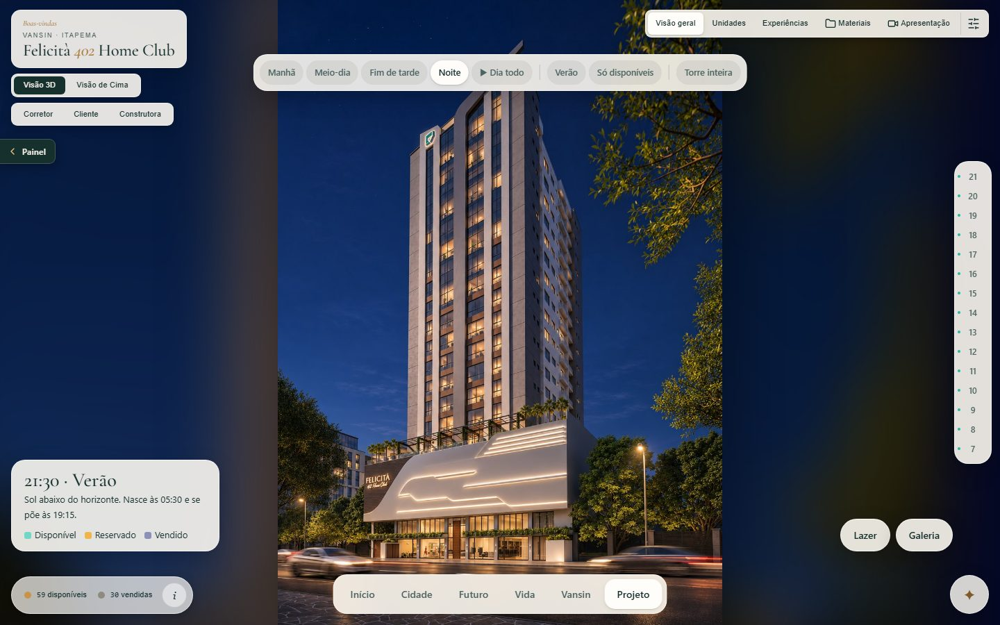
Resultado: a torre no cenário, com sol pela hora do dia e janelas acesas à noite. Felicità 402 Home Club.
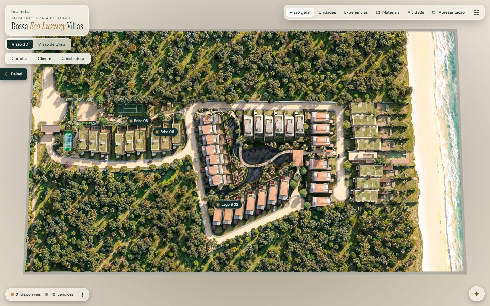
Resultado: casas no terreno real com relevo, visão 3D. Bossa Eco Luxury Villas.
Item 2
A matrícula traz as coordenadas dos vértices do lote. Se não tiver em mãos, abra o Google Maps, coloque o alfinete no terreno e mande o link. É o que põe o prédio no lugar exato e permite recortar o terreno com satélite e relevo.
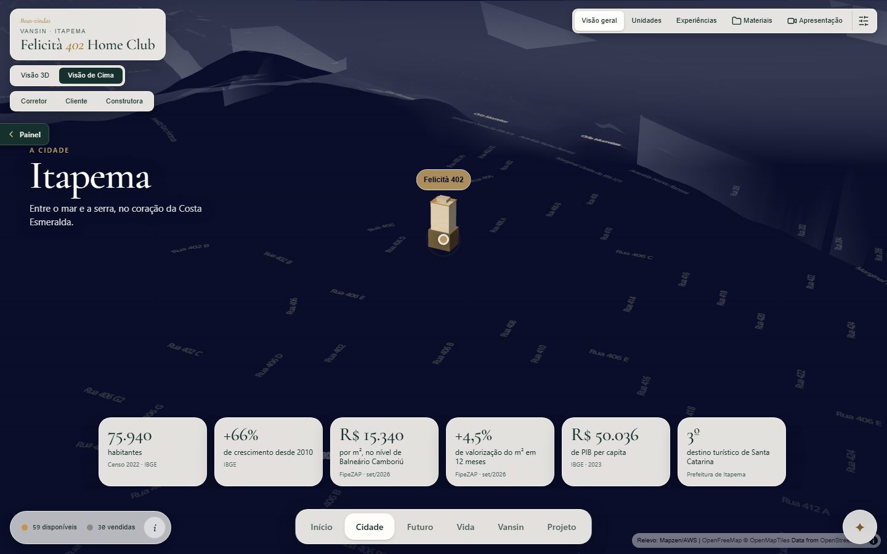
Resultado: a cidade em volta do lote, com relevo real e a torre marcada. Cena "Cidade" do Felicità.
Resultado: o terreno visto de cima, com cada unidade identificada. Bossa, visão de cima.
Itens 3 e 4
Uma planta por tipo de apartamento (Final 01, Final 02, Cobertura…). A tabela de vendas pode vir depois: até lá a ficha mostra "sob consulta" e o WhatsApp do corretor.
Unidade · Andar · Final · Tipo · Área privativa · Vagas · Valor · Situação (disponível, reservada, vendida) · Fluxo (entrada, mensais, semestrais, chaves, pós-obra). Qualquer planilha serve; nós ajustamos.
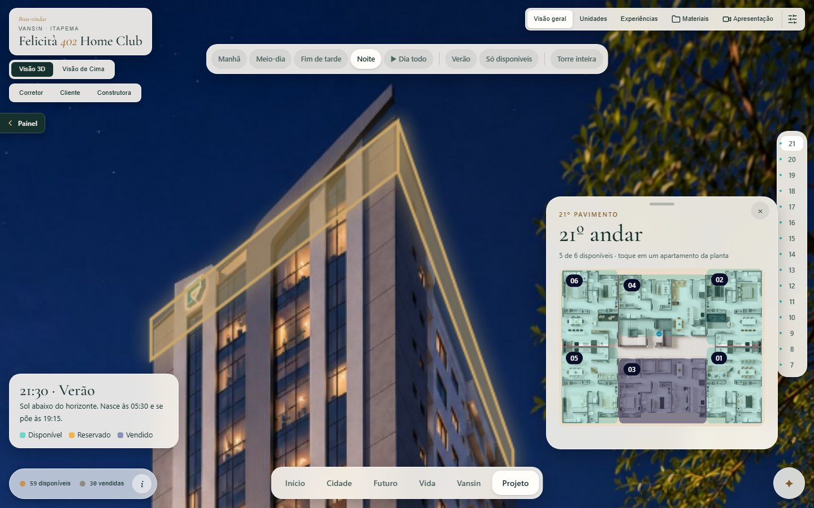
Resultado: andar escolhido na torre e planta-chave do pavimento com os finais em cores. Felicità, 21º andar.
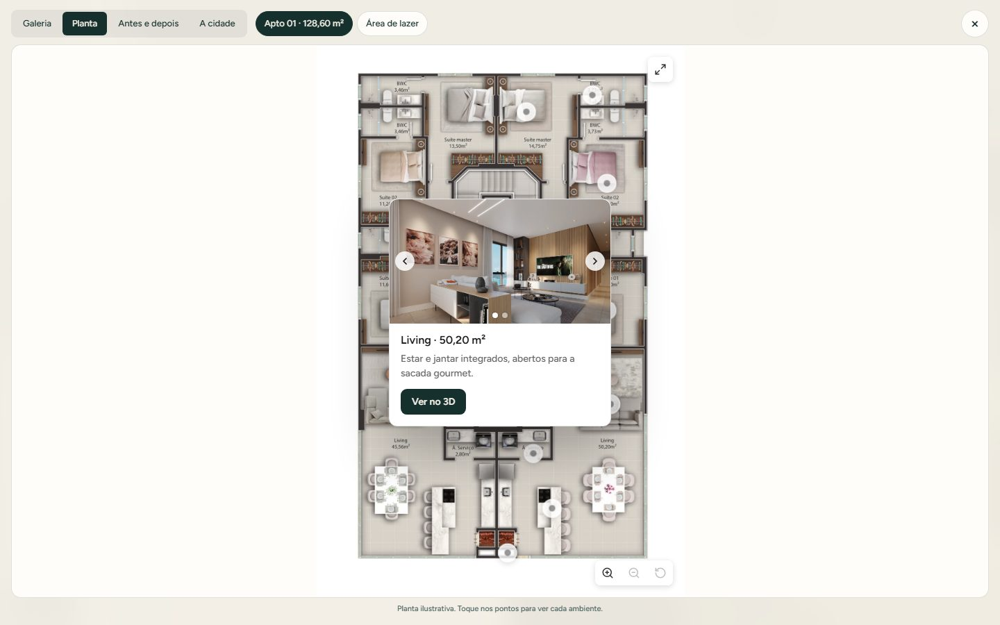
Resultado: planta com pontos; cada cômodo abre foto e texto, com "Ver no 3D". Villa Montemerano.
Itens 5 e 6
Mande os renders em alta resolução, com o nome do ambiente no arquivo (ex.: "Living - Estar.jpg"). O catálogo em PDF nos dá os textos e o endereço.
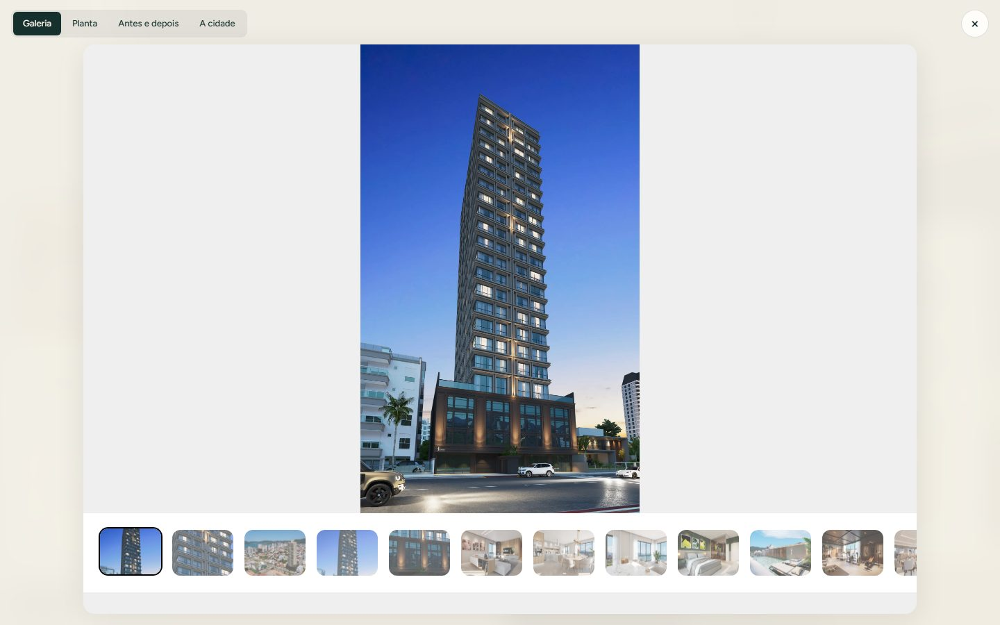
Galeria com miniaturas, zoom e tela cheia.
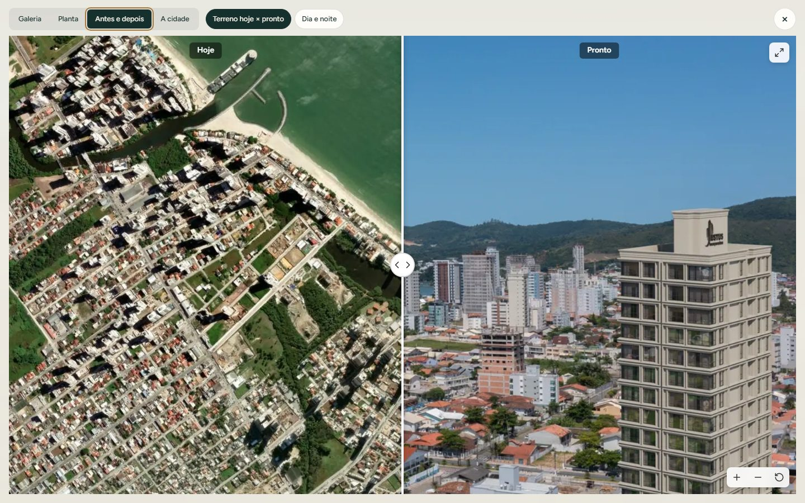
Antes e depois: terreno hoje × pronto.
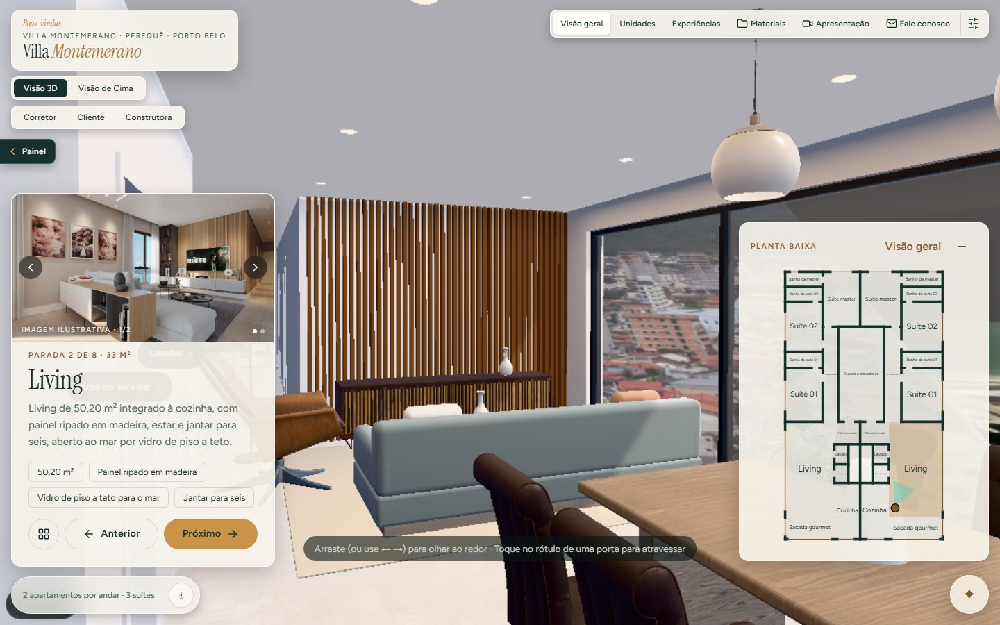
Resultado: passeio por dentro do apartamento, com o render de cada ambiente no painel (carrossel quando há mais de um). Villa Montemerano.
Itens 7, 8 e 9
A IA responde só com o que você escrever: tipologias, metragens, lazer, prazo de entrega, condições. Se não souber, ela manda falar com o corretor. Nunca inventa preço.
Texto corrido, em português. Exemplo: "Torre de 21 pavimentos, 2 apartamentos por andar, 3 suítes, 128 m², entrega prevista para julho de 2028, lazer no 6º pavimento com piscina aquecida…"
SVG ou PNG com fundo transparente. O painel tira as cores da logo e aplica no cabeçalho; dá para ajustar depois.
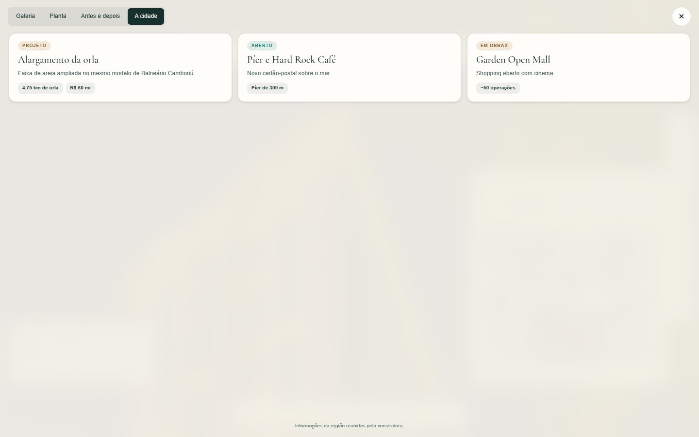
Resultado: aba "A cidade" com até 5 boxes curtos, preenchidos pela construtora no painel (título até 40 letras, texto até 140, 3 destaques).
O que acontece com o cliente
Cada corretor tem o próprio link. Quem abre vê o empreendimento na hora; na terceira interação (ou após 30 segundos) o cliente informa o nome, depois um WhatsApp ou e-mail. Tudo chega ao painel da construtora.
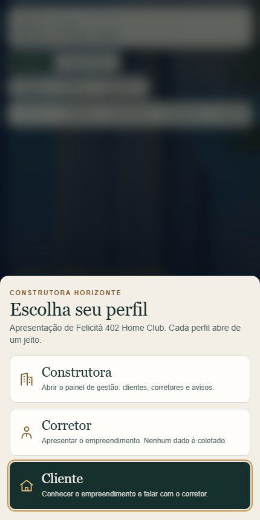
Primeira tela no celular: quem está vendo.
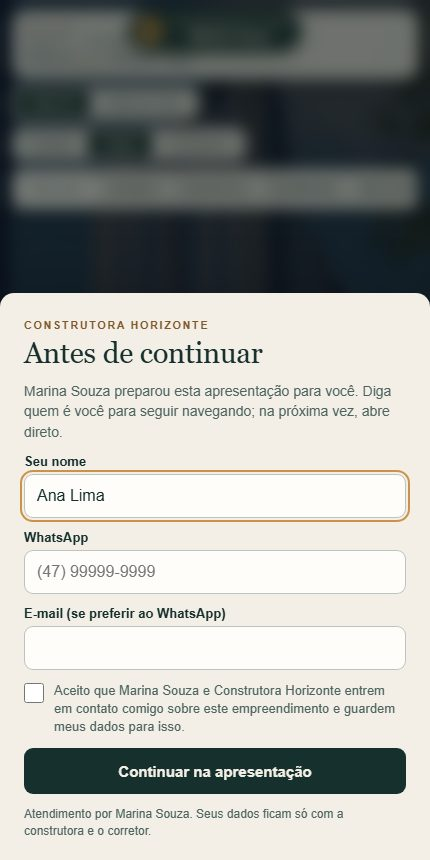
Cadastro: primeiro só o nome.
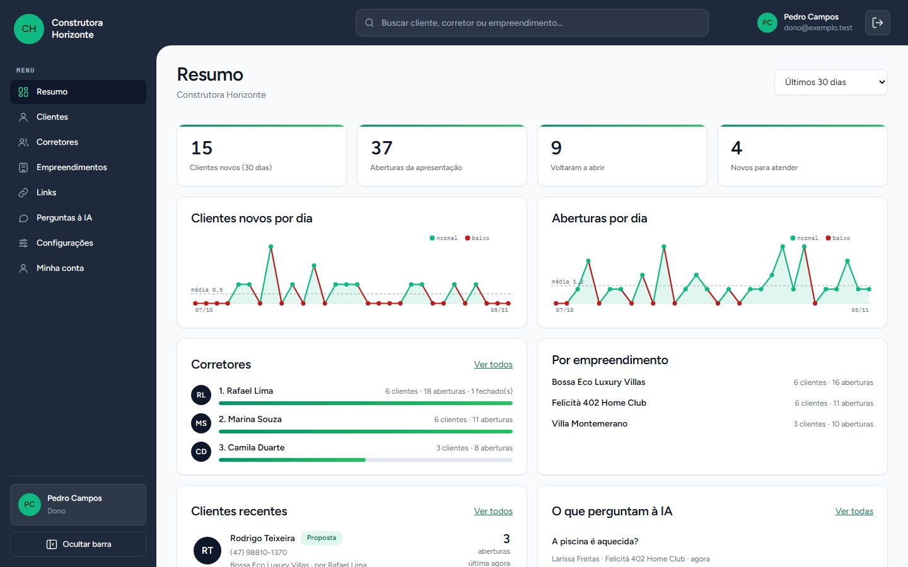
Painel da construtora: clientes novos, aberturas, ranking de corretores e perguntas feitas à IA.
Para enviar
Envie o que tiver. Marcamos o que falta e seguimos com o resto.
Com os 4 itens essenciais em mãos: cerca de 2 dias de trabalho até o link pronto para o corretor usar. Sem o modelo do arquiteto, mais 1 a 2 dias para modelar.
Imagens ilustrativas de apresentações reais da plataforma. Valores exibidos são de exemplo.